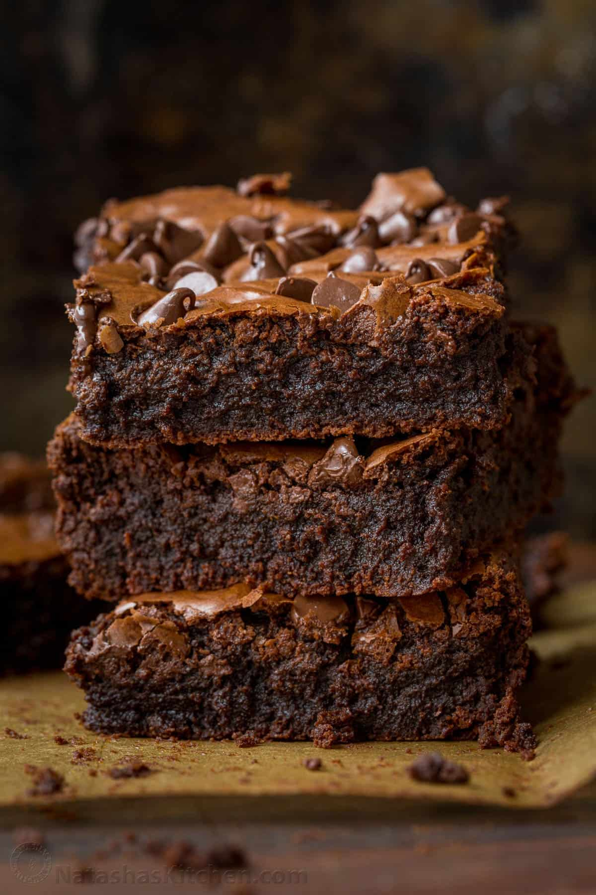

How To Make The Brownies:
Ingredients
Instructions
Set the rack in the middle of the oven and preheat to 350°F. Line a 13 x 9 x 2-inch pan with parchment paper (bring parchment up sides of pan so there is a slight overhang) and grease with butter or nonstick cooking spray.
Place the butter in a medium microwave-safe bowl and melt in the microwave until bubbling. Add the chocolate and whisk until the chocolate is completely melted. The heat from the butter should be enough to melt the chocolate completely, but if not, place the chocolate-butter mixture in the microwave and heat for 20 seconds or so, then whisk again. (Alternatively, combine the butter and chocolate in a heat proof bowl and set over a pan of simmering water. Stir occasionally until melted.)
Whisk the eggs in a large bowl. Add the salt, granulated sugar, brown sugar, and vanilla; whisk until smooth (be sure no lumps of brown sugar remain). Whisk in the chocolate-butter mixture, then add the flour and whisk until the batter is uniform.
Pour the batter into the prepared pan and spread evenly. Bake for about 45 minutes, until the top has formed a shiny crust and the batter is moderately firm. Cool completely in the pan on a rack. If not serving right away, wrap pan in plastic wrap and keep at room temperature or refrigerated until the next day.
To cut brownies, first lift them out of the pan using the parchment overhang and transfer them to a cutting board. Separate the parchment from the edges. Using a sharp knife, trim away the edges and cut the brownies into 2-in squares.
Freezer-Friendly Instructions: The brownies can be frozen for up to 3 months. After they are completely cooled, cut them into squares, wrap tightly in foil, and then place them in an airtight container or sealable plastic bag. Thaw overnight on the countertop before serving.